A Game of Telephone
A Small Population

\[ \begin{aligned} \theta_{\text{degrees}} &= \text{average in our population, over 2 and 4-year degrees, of the incremental value of the degree} \\ &=\frac{(\unicode{x25A0} - \unicode{x25B2}) + \class{fragment}{(\unicode{x25B2} - \unicode{x25CF})}}{2} \\ &=\sum_x \alpha(x) \mu(x) \qfor \alpha(x) = \begin{cases} \class{fragment}{\frac12}&\qqtext{if} x=\text{\unicode{x25A0} \ 4-year degree} \\ \class{fragment}{\frac{-1 + 1}{2}=0}&\qqtext{if} x=\text{\unicode{x25B2} \ 2-year degree} \\ \class{fragment}{-\frac12}&\qqtext{if} x=\text{\unicode{x25CF} \ high school diploma} \end{cases} \\ & \\ & \\ & \\ \theta_{\text{people}} &= \text{average in our population, over people with 2 and 4-year degrees, of the incremental value of their last degree} \\ &= \frac{4 \times (\unicode{x25A0} - \unicode{x25B2}) + \class{fragment}{2 \times (\unicode{x25B2} - \unicode{x25CF})}}{6} \\ &=\sum_x \alpha(x) \mu(x) \qfor \alpha(x) = \begin{cases} \class{fragment}{\frac46}&\qqtext{if} x=\text{\unicode{x25A0} \ 4-year degree} \\ \class{fragment}{\frac{-4 + 2}{6}=-\frac26}&\qqtext{if} x=\text{\unicode{x25B2} \ 2-year degree} \\ \class{fragment}{-\frac26}&\qqtext{if} x=\text{\unicode{x25CF} \ high school diploma} \end{cases} \\ \end{aligned} \]
A Sample

\[ \begin{aligned} \hat\theta_{\text{degrees}} &= \text{average in our sample, over 2 and 4-year degrees, of the incremental value of the degree} \\ &=\frac{(\unicode{x25A0} - \unicode{x25B2}) + \class{fragment}{(\unicode{x25B2} - \unicode{x25CF})}}{2} \\ &=\sum_x \hat\alpha(x) \hat\mu(x) \qfor \hat\alpha(x) = \begin{cases} \class{fragment}{-\frac12}&\qqtext{if} x=\text{\unicode{x25A0} \ 4-year degree} \\ \class{fragment}{\frac{-1 + 1}{2}=0}&\qqtext{if} x=\text{\unicode{x25CF} \ high school diploma} \\ \class{fragment}{\frac12}&\qqtext{if} x=\text{\unicode{x25B2} \ 2-year degree} \end{cases} \\ & \\ & \\ & \\ \hat\theta_{\text{people}} &= \text{average in our sample, over people with 2 and 4-year degrees, of the incremental value of their last degree} \\ &= \frac{3 \times (\unicode{x25A0} - \unicode{x25B2}) + \class{fragment}{(\unicode{x25B2} - \unicode{x25CF})}} {4} \\ &=\sum_x \hat\alpha(x) \hat\mu(x) \qfor \hat\alpha(x) = \begin{cases} \class{fragment}{\frac34}&\qqtext{if} x=\text{\unicode{x25A0} \ 4-year degree} \\ \class{fragment}{\frac{-3 + 1}{4}=-\frac24}&\qqtext{if} x=\text{\unicode{x25CF} \ high school diploma} \\ \class{fragment}{-\frac14}&\qqtext{if} x=\text{\unicode{x25B2} \ 2-year degree} \end{cases} \\ \end{aligned} \]
Another Sample

\[ \begin{aligned} \hat\theta_{\text{degrees}} &= \text{average in our sample, over 2 and 4-year degrees, of the incremental value of the degree} \\ &=\frac{\class{fragment}{(\unicode{x25A0} - \unicode{x25B2})} + \class{fragment}{(\unicode{x25B2} - \unicode{x25CF})}}{2} \\ &=\sum_x \hat\alpha(x) \hat\mu(x) \qfor \hat\alpha(x) = \begin{cases} \class{fragment}{\frac12}&\qqtext{if} x=\text{\unicode{x25A0} \ 4-year degree} \\ \class{fragment}{\frac{-1 + 1}{2}=0} &\qqtext{if} x=\text{\unicode{x25B2} \ 2-year degree} \\ \class{fragment}{-\frac12}&\qqtext{if} x=\text{\unicode{x25CF} \ high school diploma} \end{cases} \\ & \\ & \\ & \\ \hat\theta_{\text{people}} &= \text{average in our sample, over people with 2 and 4-year degrees, of the incremental value of their last degree} \\ &= \frac{\class{fragment}{2 \times (\unicode{x25A0} - \unicode{x25B2})} + \class{fragment}{2 \times (\unicode{x25B2} - \unicode{x25CF})}}{4} \\ &=\sum_x \hat\alpha(x) \hat\mu(x) \qfor \hat\alpha(x) = \begin{cases} \class{fragment}{\frac24}&\qqtext{if} x=\text{\unicode{x25A0} \ 4-year degree} \\ \class{fragment}{\frac{-2 + 2}{4}=0}&\qqtext{if} x=\text{\unicode{x25B2} \ 2-year degree} \\ \class{fragment}{-\frac24} &\qqtext{if} x=\text{\unicode{x25CF} \ high school diploma} \end{cases} \\ \end{aligned} \]
Setup
Writing the Code
A Bigger Version


| \(x\) | \(m_x\) | \(\mu(x)\) |
|---|---|---|
| 12 | 3.89K | 28K |
| 14 | 1.45K | 34K |
| 16 | 4.12K | 34K |
| 18 | 1.64K | 87K |
| 20 | 480.00 | 106K |
| \(x\) | \(N_x\) | \(\hat\mu(x)\) |
|---|---|---|
| 12 | 539.00 | 29K |
| 14 | 195.00 | 37K |
| 16 | 524.00 | 35K |
| 18 | 212.00 | 90K |
| 20 | 62.00 | 102K |
- What is the average in our population, over the four degree types shown, of the incremental value of the degree?
- How do we estimate it using our sample?
- What is the average in our population, over people with these 4 degrees, of the incremental value of their last degree?
- How do we estimate it using our sample?
A New Dataset

| x | \(N_x\) | \(\hat\mu(x)\) |
|---|---|---|
| 50 | 124 | 1 |
| 52 | 278 | 0.82 |
| 54 | 326 | 0.69 |
| 56 | 356 | 0.58 |
| 58 | 403 | 0.51 |
| 60 | 256 | 0.51 |
- About the Data
- Exercise Instructions: Row 1
- Exercise Instructions: Row 2
- Exercise Instructions: Row 3
- R Setup (ignore)
- R
- Menopausal Hormone Therapy, or MHT, is a treatment for the symptoms of menopause.
- It’s said that it improves bone density.
- But its effect does seem to depend on when it’s started.
- What we see here is a plot of \(y\) vs \(x\) in a sample of people who receive MHT.
- y: bone density at age 65
- x: age at which MHT was started
- Below, I’ve written out a few things you might estimate. Choose one.
- Write it out in mathematical notation.
- Pass your description to the person in the next row.
- And then switch over the the R tab and compute an estimate yourself.
- Warning.
- Some of these descriptions are vague.
- Part of your job is to come up with a sensible interpretation.
- And express it clearly enough that the person in the next row can compute exactly the same thing you do.
- Estimation targets.
- The change in bone density you’d expect if everyone in your population who started treatment after 50 instead started at 50.
- The change in bone density you’d expect if everyone in your population started treatment two years earlier than they did.
- The change in bone density you’d expect if everyone in your population started treatment two years later than they did.
- You’ll be passed a description of an estimation target.
- Translate it into plain English.
- Pass it to the person in the next row.
- And then switch over the the R tab and compute an estimate yourself.
- While you’re waiting on Row 1, here’s a warm up. Compute this. \[ \sum_{i : X_i < 60} \hat \mu(X_i+2) \]
- Take the description passed to you.
- Translate it into mathematical notation and hang on to it.
- Then switch over to the R tab and compute an estimate yourself.
- While you’re waiting on Row 2, here’s a warm up.
- Translate this into mathematical notation.
- The predicted average bone density if everyone in the population started treatment two years later than they did.
- Then switch over the R tab and compute an estimate.